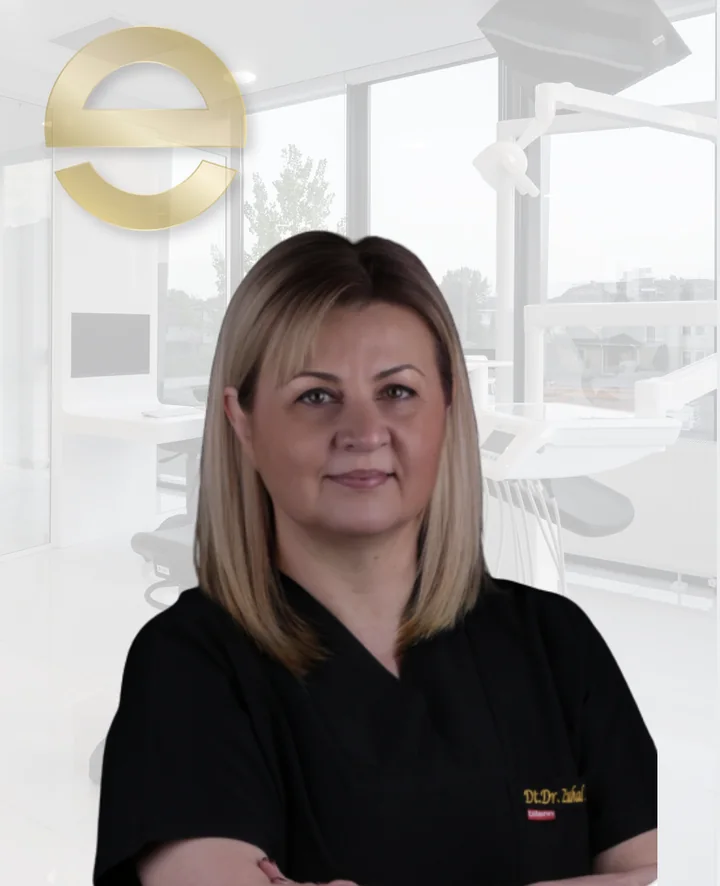
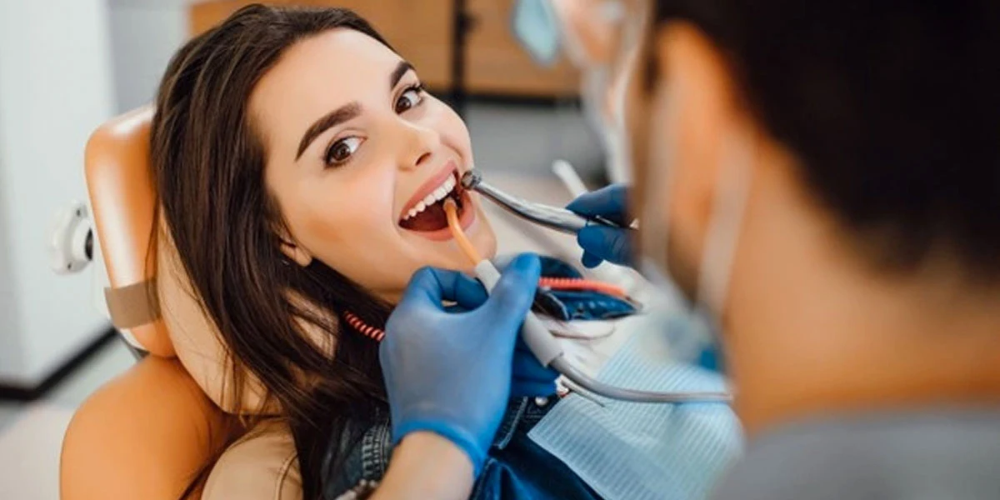

Dr. Dt. Zuhal Metin
Periodontoloji (Diş Eti Hastalıkları ve Cerrahisi) Uzmanı
Serdivan Merkez Şubesi · Özgeçmişi Gör →Sakarya Serdivan Merkez Şubemizde (İstiklal Mah. 2. Cad. No: 13, 54050 Serdivan/Sakarya), Periodontoloji Uzmanlarımız Dr. Dt. Zuhal Metin ve Dr. Dt. Neslihan Çalışkan tarafından diş eti kanaması, diş eti çekilmesi, periodontitis, küretaj, flep cerrahisi, pembe estetik (gingivektomi) ve GBT (Guided Biofilm Therapy) biyofilm temizliği uygulanmaktadır.
Diş eti kanaması, diş taşı temizliği (detertraj), küretaj ve biyofilm temizleme protokolleri ile dişleri çevreleyen yumuşak ve sert dokuların sağlığı korunur.
Detertraj (Diş Yüzeyi Temizliği), diş yüzeyindeki mikrobiyal dental plak ve diş taşının hekimler tarafından temizlenmesidir.
Diş Eti Çekilmesi Tedavisi; hijyenik olmayan kaplamalar, sert fırçalamalar ya da diş eti hastalıkları sebebiyle çekilen diş etlerinin tedavisidir.
Diş Eti İltihabı (Gingivitis), gingivit olarak da bilinen; diş etinde tahriş, kızarıklık ve şişmelere sebep olan Diş Eti İltihabının tedavisidir.
Kök Yüzeyi Düzleştirmesi, diş köklerinin yüzeyinde biriken diş taşlarının hekim tarafından temizlenmesi işlemine denir.
Rejeneratif Operasyon, kaybedilen periodontal dokuların yani destek kemik, yeni bağ dokusu lifleri ve yeni sementin yeniden şekillendirilmesini sağlamaya yönelik girişimlerdir.
Rekonstrüktif Operasyon, doğumsal veya sonradan edinilmiş anomalilerin, şekil ve fonksiyon bozukluklarının giderilmesine ve vücut imajının düzeltilmesine yönelik girişimlerdir.
Mukogingival Operasyon, dişeti ve alveoler mukozanın anatomik, gelişimsel veya travmatik deformitelerini düzeltmek veya ortadan kaldırmak için yapılan cerrahi işlemlere denir.
Gumy Smile Estetik Diş Eti Operasyonları, “Diş Eti Gülümsemesi” olarak da bilinen ve gülümseme sırasında diş etlerinin olması gerekenden daha fazla görünmesi durumunun ortadan kaldırılmasına yönelik işlemlere denir.
PRP (Platelet Rich-Plasma), vücuttan alınan ve özel bir işleme tabi tutulan kanda belli yoğunlukta bulunan trombosit hücrelerinin ayıklanarak, dokularda oluşan hasarları tamir etmek amacıyla tekrar dokuya verilmesi işlemine denir.
Guided Biofilm Therapy (GBT), diş ve diş eti yüzeyindeki mikrobiyal biyofilmi (plak tabakasını) özel boyama ile görünür hale getirdikten sonra ılık su ve mikron boyutlu eritritol tozu (Airflow) ile mineyi, porselen kaplamaları ve implant titanyum yüzeylerini çizmeden temizleyen modern periodontal bakım protokolüdür. Soğuk su hassasiyeti olan hastalar ve implant/zirkonyum taşıyan bireyler için konforlu bir profesyonel bakım sunar.
Periodontology focuses on the diagnosis, prevention and treatment of gum diseases and the supporting tissues around the teeth.
At Evdiş, periodontal care may include professional dental cleaning, gum disease treatment, root surface cleaning, regenerative procedures and aesthetic gum treatments when clinically appropriate.
A detailed examination is required to determine the most suitable treatment plan for each patient.
